OSCAR Dashboard
❗️
For simple OSCAR services you may use the Dashboard, but its features may not be on par with the latest changes in the FDL. Therefore, it is recommended to use OSCAR CLI to deploy an OSCAR service.
This section details the usage of the OSCAR Dashboard with the plant classification example, from the OSCAR examples.
Login
OSCAR Dashboard is exposed via a Kubernetes ingress and it is accessible via the Kubernetes master node IP.
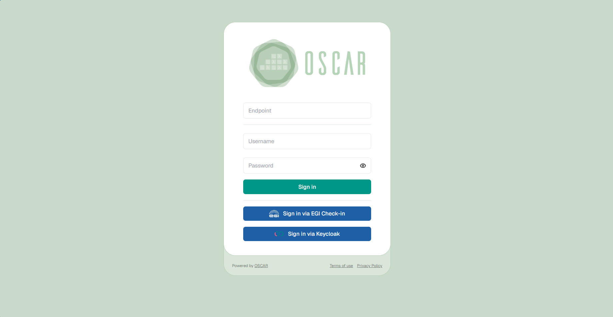
After a correct login, you should see the main view:
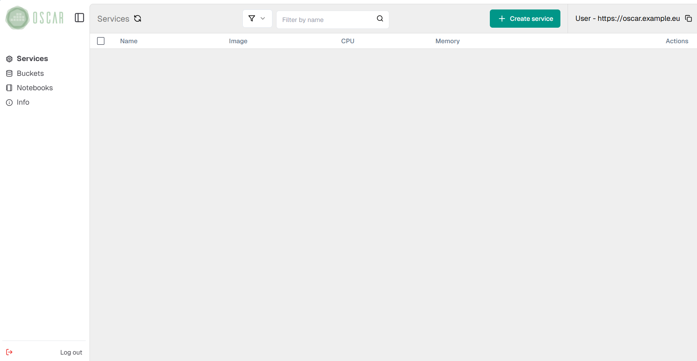
Deploying services
In order to create a new service, you must click on the "Create service"
button and follow the wizard. For an OSCAR Service a script must be provided for the
processing of files. This script must use the environment variables
INPUT_FILE_PATH and TMP_OUTPUT_DIR to refer to the input file and the
folder where to save the results respectively:
#!/bin/bash
echo "SCRIPT: Invoked classify_image.py. File available in $INPUT_FILE_PATH"
FILE_NAME=`basename "$INPUT_FILE_PATH"`
OUTPUT_FILE="$TMP_OUTPUT_DIR/$FILE_NAME"
python2 /opt/plant-classification-theano/classify_image.py \
"$INPUT_FILE_PATH" -o "$OUTPUT_FILE"
You must fill in the fields indicating the container image to use, the name of the service and the script file. In addition, you can add environment variables, specify the resources (RAM and CPUs) and choose the log level of the service.
Note that specifying a tag in the container image used can be convenient to
avoid problems with quotas for certain container registries such as
Docker Hub.
This is due to the fact that Kubernetes defaults the
imagePullPolicy
of pods to Always when no tag or the latest tag is set, which checks the
version of the image in the registry every time a job is launched.
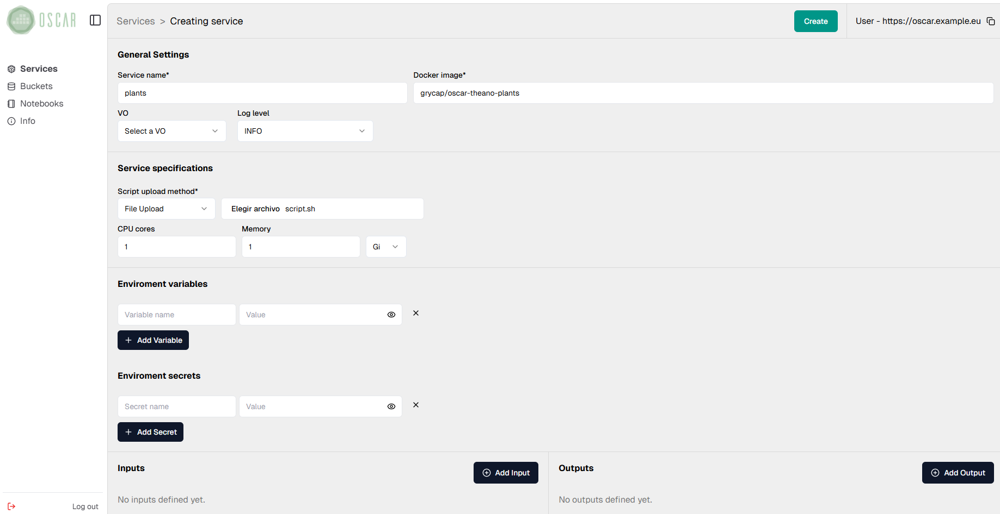
Next, we need to specify input and output storage parameters. You can utilize one or multiple storage providers supported by the platform, like MinIO, Onedata, and Amazon S3.
As we use the service creation form provided by the web interface to create the service, we will only have access to the default MinIO storage provided with the platform. In order to configure a more complicated workflow using multiple storage providers, you need to use an FDL file to define the service.
In this step, you must first choose the paths of the storage provider to be used as source of events, i.e. the input bucket and/or folder that will trigger the service.
Only the minio.default provider can be used as input storage provider.
After filling in each path, remember to click on the "Save" button.
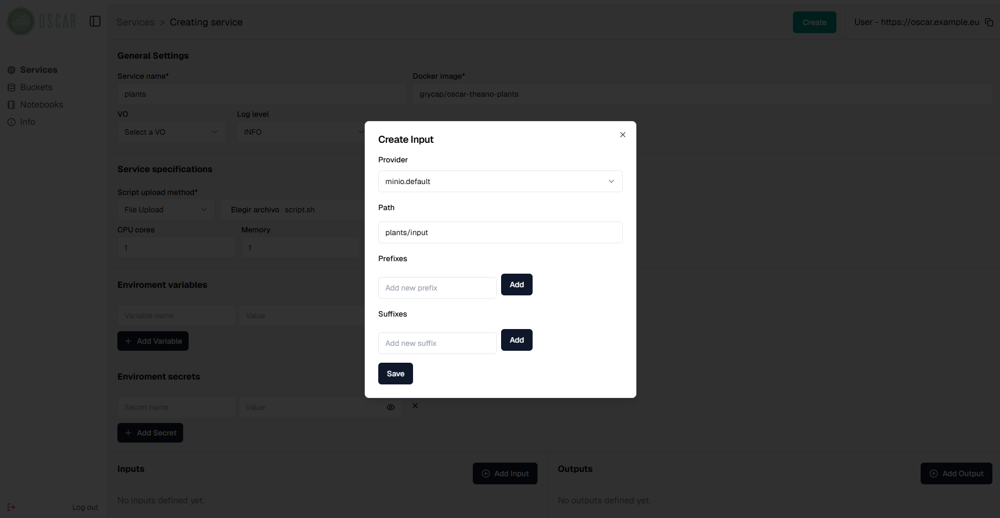
Finally, the same must be done to indicate the output paths to be used in the desired storage providers. You can also indicate suffixes and/or prefixes to filter the files uploaded to each path by name.
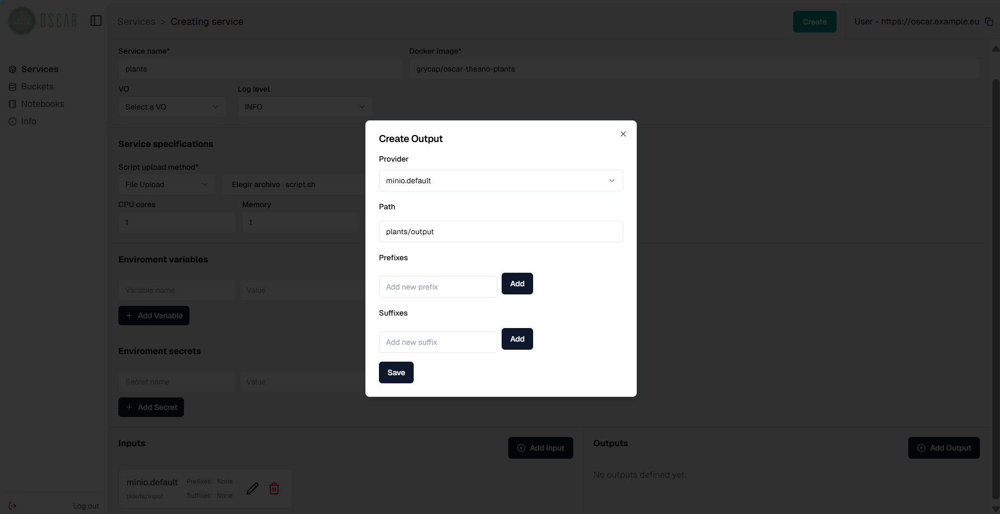
ℹ️
Note that the resulting files can be stored in several storage providers other than MinIO, but in order to do that, you must create the service through the FDL file.
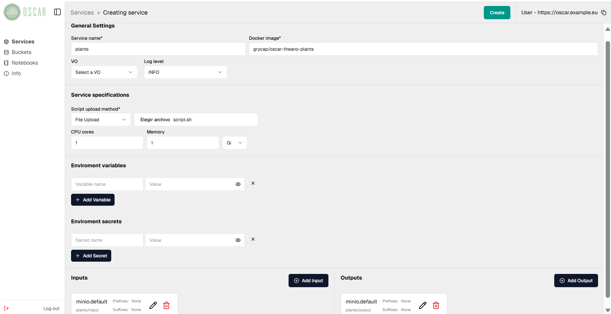
After clicking the "Create" button we will see the new service edit menu.
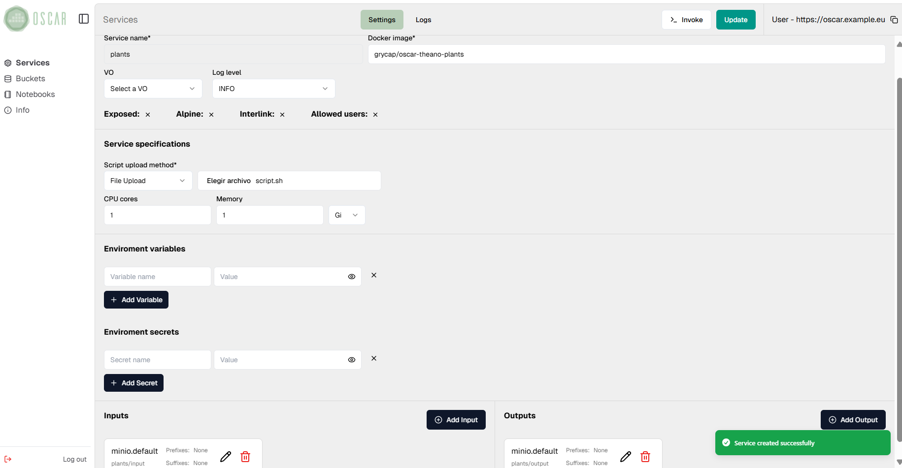
Also, we will be able to see it on the main view after a few seconds.

Triggering the service
HTTP endpoints
OSCAR services can be invoked through auto-generated HTTP endpoints. Requests to these endpoints can be made in two ways:
- Synchronous through the path
/run/<SERVICE_NAME>. This redirects the request to the OpenFaaS gateway in order to perform the processing. - Asynchronous through the path
/job/<SERVICE_NAME>. This mode is used to perform file-processing when files are uploaded to the input storage provider, creating a Kubernetes job per service invocation.
The content of the HTTP request body will be stored as a file that will be
available via the INPUT_FILE_PATH environment variable to process it.
A detailed specification of the OSCAR's API and its different paths can be found here.
MinIO Storage Tab
MinIO Storage Tab is made to manage buckets without using MinIO UI. It simplifies the process. From MinIO Storage Tab, buckets can be created or removed and folders inside them. Furthermore, files can be uploaded to the buckets and downloaded from them. Each time a service is created or submitted an edit, the buckets that are not created will be formed.
Uploading files
Once a service has been created, it can be invoked by uploading files to its
input bucket/folder. This can be done through the MinIO web interface
(accessible from the Kubernetes frontend IP, on port 30300) or from the
"Buckets" section in the side menu of the OSCAR web interface. Selecting that section will list the buckets created and, by clicking on their name,
you will be able to see their content, upload and download files.
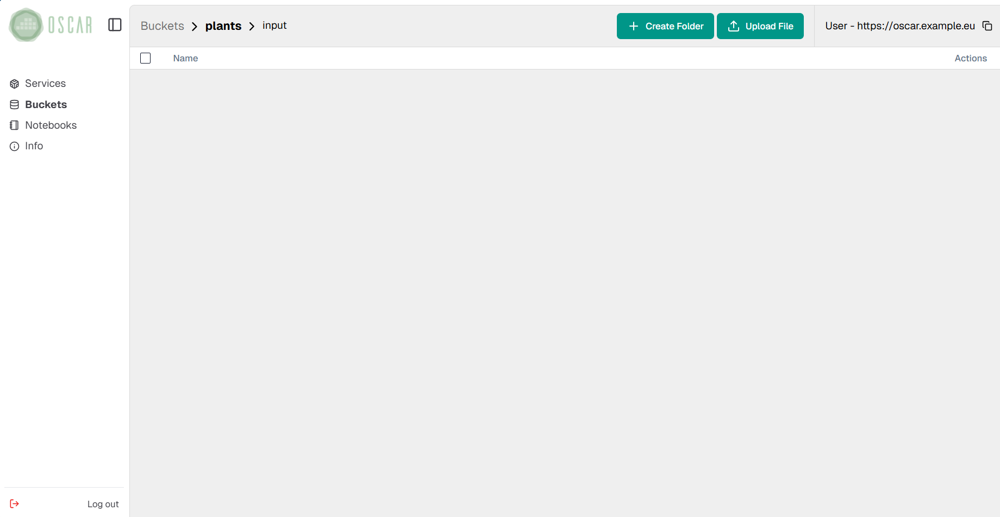
To upload files, you can simply drag and drop them into the folder in the bucket or through the upload file button.
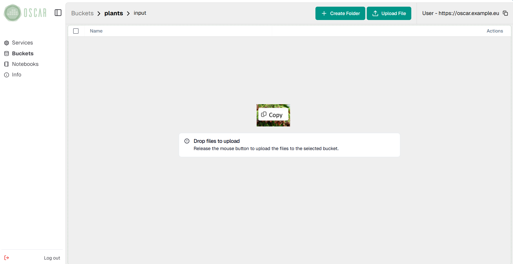
The file will be uploaded, raising an event that will trigger the service.
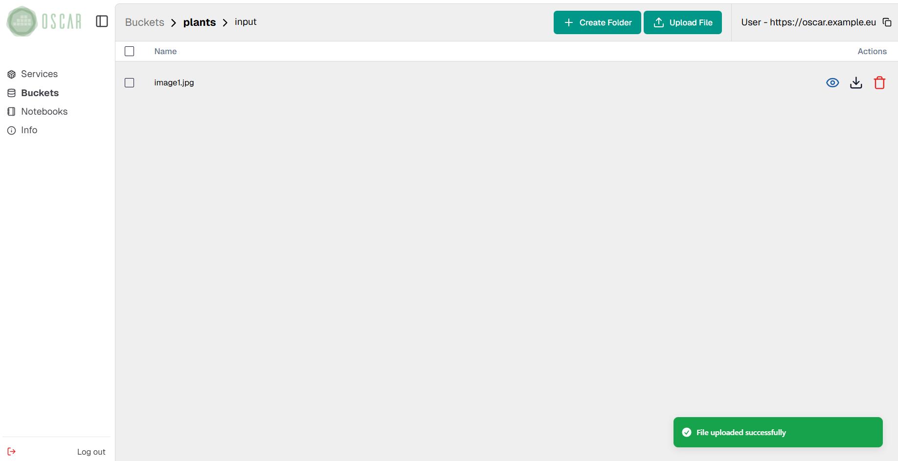
Note that the web interface includes a preview button for some file formats, such as images.
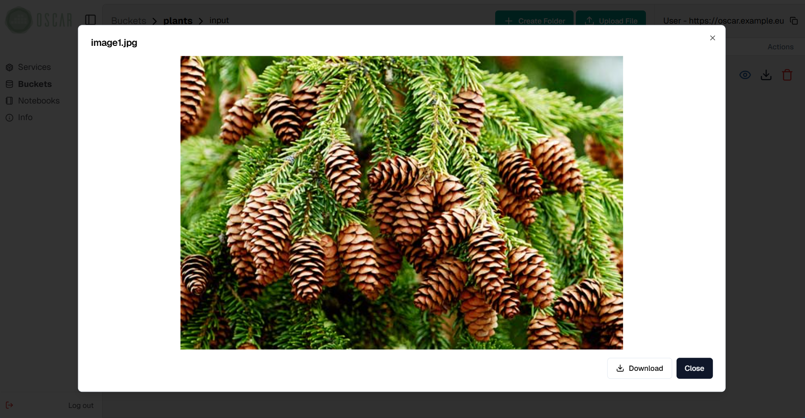
Service status and logs
When files are being processed by a service, it is important to know their status, as well as to observe the execution logs for testing. For this purpose, OSCAR includes a log view, accessible by clicking on the "Logs" button in a service from the main view.
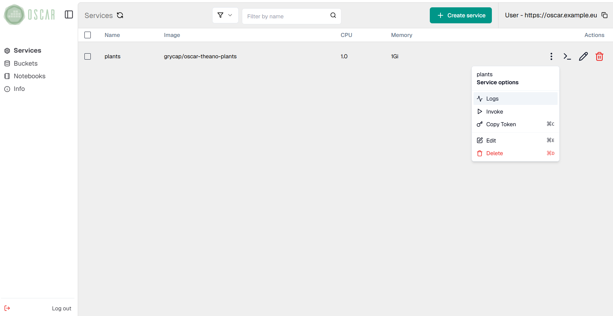
In this view you can see all the jobs created for a service, as well as their status ("Pending", "Running", "Succeeded" or "Failed") and their creation, start and finish time.
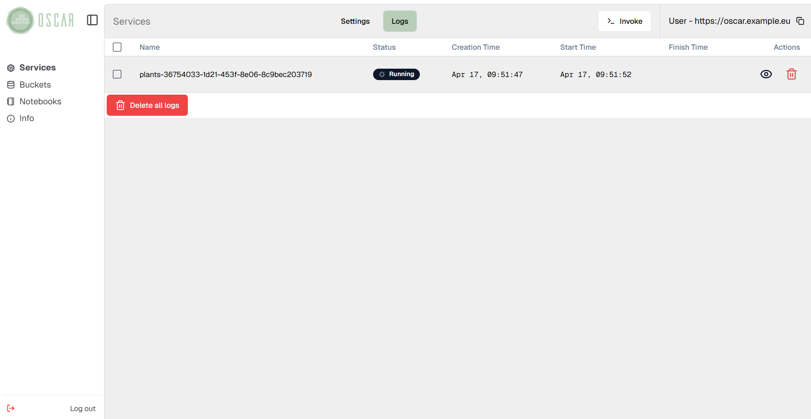
To view the logs generated by a job, simply click on the drop-down button located on the right.
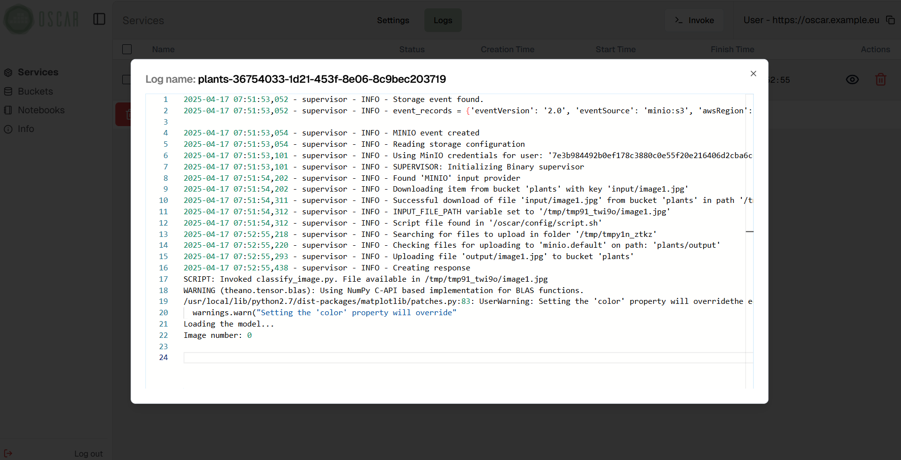
The view also features options to delete one or all logs.
Downloading files from MinIO
Downloading files from the platform's MinIO storage provider can also be done using the OSCAR web interface. To do it, simply select one or more files and click on the button "Download" or click on download icon to download one file.
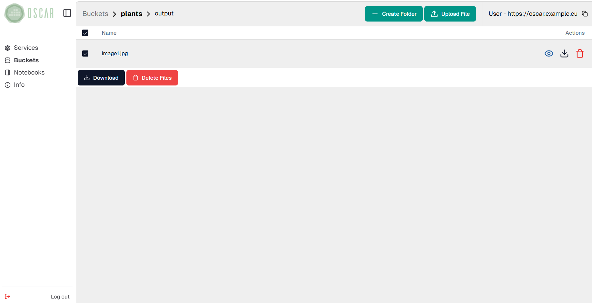
In the following picture you can see the preview of the resulting file after the execution triggered in the previous step.

Deleting services
Services can be deleted by clicking on the trash can icon from the main view.
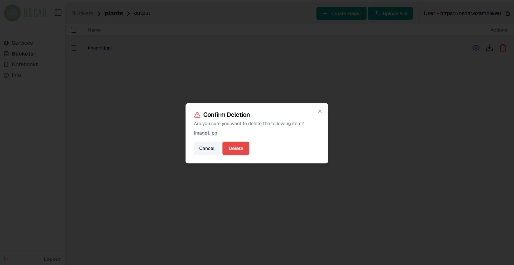
Once you have accepted the message shown in the image above, the service will be deleted after a few seconds.